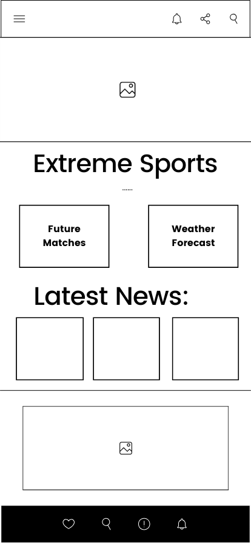
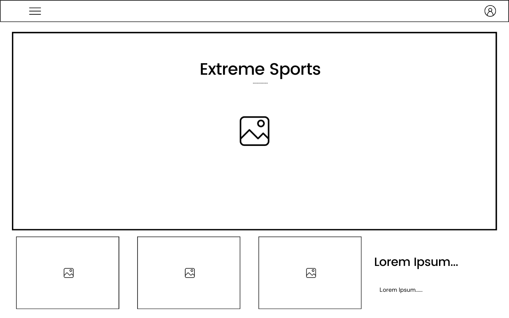

This is my SitePlan!
Why did I choose this subject? Good question!
- I love sports!
- I think it can cover every lesson parameter.
- I can create a dynamic and interactive website using an interesting subject.
Different scenarios:
- People could come to this website to know more about their favorite team or sport
- People could visit my site if interested in sports and latest news
Colors I will use:
- Black - Borders and paragraphs
- Castleton Green - Header and footer, and paragraphs
- Sea Green - Mainly Banners
- Emerald - Mainly banners and form background
- Celadon - Background colors
- White - Paragraphs and backgrounds
Fonts I will use:
- Teko font
- Anton font
- Roboto
Wireframes:

